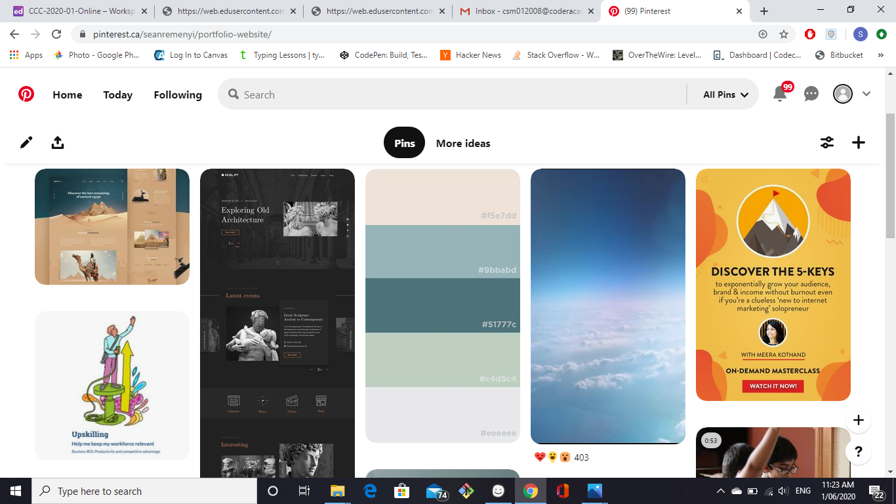

Blog
Portfolio Started!
28/05/20
Today in class was the first time i worked on my portfolio website. I used balsamiq to draw up a wire frame which would then become the groundwork for the site. I had never used balsamiq before or had even made a wireframe. Today was a learning experience for many things.
First Idea Scraped
28/05/20

After talking to my lecturer Garrett i realised i hated my site, I was going about everything wrong, between my layouts and how I wanted to bring my idea to life. I realised how I was going about it was all wrong and decided to go back to the drawing board, go to pinterest and google and try to drum up some ideas and inspirations
Vic Highway Revisited
29/05/20
Just reflecting on my last day off which was wednesday. Got out of town with my girlfriend and drove up to Wilson's Promontory, it was a beautiful space. Got to walk a trail teming with kangaroos, wombats and emus. Got to climb a giant sand dune and even hike around. Was a beautiful day spent with my girlfriend.
Back to the Drawing Board
30/05/20
I was on a roll, well I thought I was. Today was the last day of classes for the week so if we had any questions now was the time. I ws getting pretty proud of my site too, was showing off my pictures and felt like it was all going good. Then decided to show some people in my cohort and our other lecturer Jamal who pointed out as good my site was looking, from an outside perspective, it was very photography focused. And at the end of the day this is for IT recruiters, not photographers
I think I've got it Now
31/05/20
I noticed in my pinterest stuff, I realised a lot of background with images kind of transparent in the background and i really liked the effect. I figured this might be a good way to have my pictures on the site but still have it look professional from a web dev perspective. After some googling i found the style i wanted to use and think it will be a good balance of my photos and still professional.